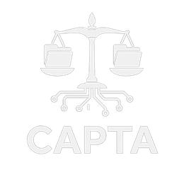

CAPTA · Colecta Ágil de PEP Técnico Auditable
PEP · Potencial Elemento Probatorio
Herramienta de adquisición forense digital de campo para dispositivos móviles Android e iOS, desarrollada en el Ministerio Público Fiscal de Córdoba.

Qué es CAPTA
CAPTA es una herramienta de adquisición forense móvil de baja intrusión, pensada para el primer interventor en la escena. La mayoría de los procedimientos forenses fueron diseñados para el laboratorio, donde el tiempo y los recursos son controlables; en el campo, esa dependencia se traduce en demoras, costos altos y pérdida de oportunidad para obtener información temprana que oriente decisiones críticas.
Frente a esa brecha, CAPTA realiza una recolección selectiva de artefactos de alto valor probatorio desde dispositivos Android e iOS, por los canales oficiales de diagnóstico y respaldo de cada sistema (ADB en Android; respaldo lógico en iOS), sin requerir privilegios de superusuario (root o jailbreak) ni modificaciones persistentes del equipo. No reemplaza al laboratorio: ocupa la primera etapa de una estrategia forense escalonada, aportando una adquisición documentada e íntegra en minutos.
Es un desarrollo público, sin fines de lucro, y su registro responde a políticas institucionales. Está abierta a la colaboración con otras instituciones públicas.
Qué releva
Resumen de las capacidades actuales sobre Android e iOS; el detalle por plataforma está en la guía interactiva.
Identidad del dispositivo
Modelo, número de serie, sistema operativo, apps instaladas y marcas temporales con zona horaria.
Llamadas, SMS y WhatsApp
Registros de comunicación y vista de la conversación de WhatsApp con adjuntos; en iOS, además reacciones, ediciones y encuestas, y los acuses de entrega y lectura de SMS/iMessage distinguidos por dirección.
Contactos, calendario y cuentas
Agenda, eventos y cuentas vinculadas; en iOS también notas con sus adjuntos, autocompletado del navegador (direcciones), búsquedas web recientes de Safari y dispositivos Bluetooth emparejados.
Ubicación
GPS, Wi-Fi y celdas en Android; en iOS, coordenadas de los metadatos de las fotos.
Fotografías, videos y multimedia
Inventario y copia deliberada, con extracción de metadatos EXIF y coordenadas GPS.
Detección de imágenes generadas por IA
Analiza los metadatos de las fotos para detectar generación por inteligencia artificial, sin alterar el archivo (Android).
Actividad y apps de interés
Uso de permisos, apps recientes y detección de apps de criptoactivos, ocultamiento y bancarias (Android).
Análisis por interlocutor
Agrupa toda la comunicación por persona en lugar de orden cronológico plano.
Retención por caso y validación independiente (iOS)
El alcance de lo que se conserva se ajusta al rol del equipo en la causa (testigo o imputado), y el respaldo puede cotejarse con una herramienta de código abierto de uso forense internacional (iLEAPP).
Integridad y cadena de custodia
El valor probatorio de una adquisición depende de poder demostrar que lo obtenido no fue alterado. CAPTA construye esa garantía con mecanismos verificables de forma independiente:
Hash SHA-256 por artefacto
Calculado en el momento de la recolección, antes de cualquier procesamiento posterior.
Log forense encadenado
Encadenado criptográficamente: cualquier alteración posterior de un solo carácter se vuelve detectable al recalcular la cadena.
Manifiesto y solo lectura
Manifiesto y bloqueo en solo lectura al cerrar la adquisición.
CAPTA Verificador
Revalida hashes y cadena sin necesidad de la herramienta original, incluso en una audiencia.
Licenciamiento atado al kit
Cada ejecutable queda individualizado criptográficamente al hardware autorizado.
Validación independiente en iOS (iLEAPP)
En iOS, CAPTA extrae con un respaldo lógico estándar de Apple (el mismo de iTunes/Finder), sin jailbreak ni modificación del equipo. El informe sigue siendo simple y curado, pero en modo de retención amplio CAPTA preserva además el respaldo completo con un manifiesto SHA-256, de modo que lo informado pueda cotejarse con iLEAPP, una herramienta de código abierto (licencia MIT) de uso forense internacional que se corre por separado sobre el respaldo.
Respaldo institucional
CAPTA fue desarrollada íntegramente dentro del Estado, en la Dirección de Investigación Operativa del Ministerio Público Fiscal de Córdoba, sobre la base de años de experiencia operativa en investigación de ciberdelitos y adquisiciones digitales en campo.
El modelo conceptual y su implementación fueron sometidos a un proceso de validación por pares y publicados en las JAIIO (Jornadas Argentinas de Informática); esas publicaciones documentan la versión para Android, mientras que la versión actual del sistema ya incorpora iOS. En el ámbito institucional, CAPTA fue puesta a prueba en el marco del PIA 2025 (Programa de Investigación Aplicada, articulado por el Instituto de Formación del MPF), instancia que dio paso a su aprobación formal mediante Resolución FG N° 7/26 de la Fiscalía General de Córdoba.
Se utiliza en procedimientos con autorización judicial motivada, por personal capacitado, con documentación exhaustiva en reporte forense y acta de recolección.
Publicaciones en las 55.° JAIIO (Jornadas Argentinas de Informática, SADIO · 2026):
Preguntas frecuentes
¿Qué es CAPTA?
CAPTA (Colecta Ágil de PEP Técnico Auditable) es una herramienta de adquisición forense digital de campo para dispositivos móviles Android e iOS, desarrollada en el Ministerio Público Fiscal de Córdoba. Está diseñada para el primer interventor en la escena: realiza una recolección selectiva, documentada e íntegra de potenciales elementos probatorios (PEP) en minutos, con baja intrusión sobre el dispositivo.
¿Qué es la adquisición forense digital de campo?
Es la obtención de evidencia digital directamente en el lugar del procedimiento, sin trasladar el equipo a un laboratorio. A diferencia de los procesos de laboratorio, pensados para entornos con tiempo y recursos controlados, la adquisición de campo permite obtener información temprana que oriente decisiones críticas. CAPTA no reemplaza al laboratorio: ocupa la primera etapa de una estrategia forense escalonada.
¿Quién desarrolló CAPTA?
CAPTA fue desarrollada íntegramente dentro del Estado, en la Dirección de Investigación Operativa del Ministerio Público Fiscal de Córdoba, sobre la base de años de experiencia operativa en investigación de ciberdelitos y adquisiciones digitales en campo. Está aprobada por Resolución FG N° 7/26.
¿En qué se diferencia de una extracción forense completa?
CAPTA realiza una recolección selectiva de artefactos de alto valor probatorio a través de los canales oficiales de diagnóstico y respaldo de cada sistema (ADB en Android; respaldo lógico en iOS), sin requerir privilegios de superusuario (root o jailbreak) ni modificaciones persistentes del equipo. No busca copiar todo el dispositivo, sino aportar una adquisición rápida, documentada e íntegra en la primera etapa de la investigación.
¿Cómo garantiza CAPTA la cadena de custodia?
Mediante mecanismos verificables de forma independiente: hash SHA-256 por artefacto calculado al momento de la recolección, un log forense encadenado criptográficamente que vuelve detectable cualquier alteración posterior, manifiesto y bloqueo en solo lectura al cerrar la adquisición, y CAPTA Verificador, que revalida hashes y cadena sin la herramienta original, incluso en audiencia. Sigue los lineamientos de las normas ISO/IEC 27037, 27041, 27042, 27043 y NIST SP 800-101 r1.
¿Funciona en Android y iOS?
Sí. CAPTA opera sobre dispositivos Android e iOS a través de los canales oficiales de cada sistema. En Android utiliza la depuración USB (ADB) y en iOS el respaldo lógico. Las capacidades por plataforma se detallan en la guía interactiva.
¿Se puede validar lo que informa CAPTA con otra herramienta?
Sí. En iOS, CAPTA puede preservar el respaldo lógico del dispositivo en un formato estándar, con un manifiesto que registra el hash SHA-256 de cada archivo. Ese respaldo puede analizarse con iLEAPP (iOS Logs, Events, And Plists Parser), una herramienta de código abierto de uso extendido en la comunidad forense internacional. CAPTA no integra ni redistribuye iLEAPP: deja el respaldo en un formato compatible y asienta en el reporte la constancia necesaria para que el cotejo sea reproducible y su integridad, verificable con software de terceros.
¿CAPTA copia todo el contenido del teléfono?
No necesariamente. En iOS, al extraer se elige el alcance de retención según el rol del equipo en la causa, respetando el principio de proporcionalidad: en modo acotado (pensado para equipos de víctima o testigo) el operador elige qué categorías conservar y lo no seleccionado no se retiene ni se reporta; en modo amplio (imputado) además se preserva el respaldo completo para su cotejo posterior. En ambas plataformas, la copia de archivos multimedia es siempre una acción deliberada del operador, nunca automática.